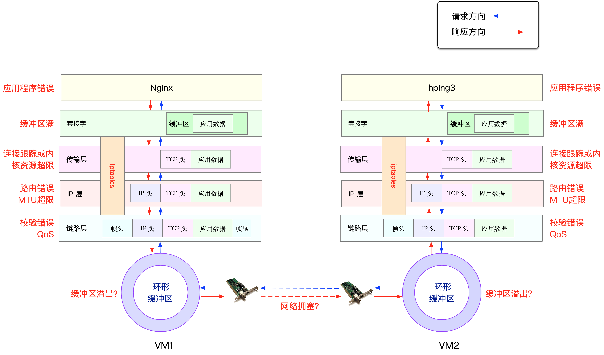

执行 docker ps 命令，查询容器的状态：
$ docker ps
CONTAINER ID IMAGE COMMAND CREATED STATUS PORTS NAMES
dae0202cc27e feisky/nginx:drop "/start.sh" 4 minutes ago Up 4 minutes 0.0.0.0:80->80/tcp nginx
执行下面的 hping3 命令，进一步验证 Nginx 是不是真的可以正常访问了。注意，这里我没有使用 ping，是因为 ping 基于 ICMP 协议，而 Nginx 使用的是 TCP 协议。
# -c表示发送10个请求，-S表示使用TCP SYN，-p指定端口为80
$ hping3 -c 10 -S -p 80 192.168.0.30
HPING 192.168.0.30 (eth0 192.168.0.30): S set, 40 headers + 0 data bytes
len=44 ip=192.168.0.30 ttl=63 DF id=0 sport=80 flags=SA seq=3 win=5120 rtt=7.5 ms
len=44 ip=192.168.0.30 ttl=63 DF id=0 sport=80 flags=SA seq=4 win=5120 rtt=7.4 ms
len=44 ip=192.168.0.30 ttl=63 DF id=0 sport=80 flags=SA seq=5 win=5120 rtt=3.3 ms
len=44 ip=192.168.0.30 ttl=63 DF id=0 sport=80 flags=SA seq=7 win=5120 rtt=3.0 ms
len=44 ip=192.168.0.30 ttl=63 DF id=0 sport=80 flags=SA seq=6 win=5120 rtt=3027.2 ms
--- 192.168.0.30 hping statistic ---
10 packets transmitted, 5 packets received, 50% packet loss
round-trip min/avg/max = 3.0/609.7/3027.2 ms
从 hping3 的输出中，我们可以发现，发送了 10 个请求包，却只收到了 5 个回复，50% 的包都丢了。再观察每个请求的 RTT 可以发现，RTT 也有非常大的波动变化，小的时候只有 3ms，而大的时候则有 3s。根据这些输出，我们基本能判断，已经发生了丢包现象。可以猜测，3s 的 RTT ，很可能是因为丢包后重传导致的。那到底是哪里发生了丢包呢？

从图中你可以看出，可能发生丢包的位置，实际上贯穿了整个网络协议栈。换句话说，全程都有丢包的可能。比如我们从下往上看：
- 在两台 VM 连接之间，可能会发生传输失败的错误，比如网络拥塞、线路错误等；
- 在网卡收包后，环形缓冲区可能会因为溢出而丢包；
- 在链路层，可能会因为网络帧校验失败、QoS 等而丢包；
- 在 IP 层，可能会因为路由失败、组包大小超过 MTU 等而丢包；
- 在传输层，可能会因为端口未监听、资源占用超过内核限制等而丢包；
- 在套接字层，可能会因为套接字缓冲区溢出而丢包；
- 在应用层，可能会因为应用程序异常而丢包；
- 此外，如果配置了 iptables 规则，这些网络包也可能因为 iptables 过滤规则而丢包。
执行下面的命令，进入容器的终端中：
$ docker exec -it nginx bash
root@nginx:/#
链路层
首先，来看最底下的链路层。当缓冲区溢出等原因导致网卡丢包时，Linux 会在网卡收发数据的统计信息中，记录下收发错误的次数。
可以通过 ethtool 或者 netstat ，来查看网卡的丢包记录。比如，可以在容器中执行下面的命令，查看丢包情况：
root@nginx:/# netstat -i
Kernel Interface table
Iface MTU RX-OK RX-ERR RX-DRP RX-OVR TX-OK TX-ERR TX-DRP TX-OVR Flg
eth0 100 31 0 0 0 8 0 0 0 BMRU
lo 65536 0 0 0 0 0 0 0 0 LRU
输出中的 RX-OK、RX-ERR、RX-DRP、RX-OVR ，分别表示接收时的总包数、总错误数、进入 Ring Buffer 后因其他原因（如内存不足）导致的丢包数以及 Ring Buffer 溢出导致的丢包数。 TX-OK、TX-ERR、TX-DRP、TX-OVR 也代表类似的含义，只不过是指发送时对应的各个指标。
注意，由于 Docker 容器的虚拟网卡，实际上是一对 veth pair，一端接入容器中用作 eth0，另一端在主机中接入 docker0 网桥中。veth 驱动并没有实现网络统计的功能，所以使用 ethtool -S 命令，无法得到网卡收发数据的汇总信息。
容器终端中，执行下面的 tc 命令，不过这次注意添加 -s 选项，以输出统计信息：
root@nginx:/# tc -s qdisc show dev eth0
qdisc netem 800d: root refcnt 2 limit 1000 loss 30%
Sent 432 bytes 8 pkt (dropped 4, overlimits 0 requeues 0)
backlog 0b 0p requeues 0
网络层和传输层
在网络层和传输层中，引发丢包的因素非常多。不过，其实想确认是否丢包，是非常简单的事，因为 Linux 已经为我们提供了各个协议的收发汇总情况。
执行下面的 netstat -s 命令，就可以看到协议的收发汇总，以及错误信息了：
root@nginx:/# netstat -s
Ip:
Forwarding: 1 //开启转发
31 total packets received //总收包数
0 forwarded //转发包数
0 incoming packets discarded //接收丢包数
25 incoming packets delivered //接收的数据包数
15 requests sent out //发出的数据包数
Icmp:
0 ICMP messages received //收到的ICMP包数
0 input ICMP message failed //收到ICMP失败数
ICMP input histogram:
0 ICMP messages sent //ICMP发送数
0 ICMP messages failed //ICMP失败数
ICMP output histogram:
Tcp:
0 active connection openings //主动连接数
0 passive connection openings //被动连接数
11 failed connection attempts //失败连接尝试数
0 connection resets received //接收的连接重置数
0 connections established //建立连接数
25 segments received //已接收报文数
21 segments sent out //已发送报文数
4 segments retransmitted //重传报文数
0 bad segments received //错误报文数
0 resets sent //发出的连接重置数
Udp:
0 packets received
...
TcpExt:
11 resets received for embryonic SYN_RECV sockets //半连接重置数
0 packet headers predicted
TCPTimeouts: 7 //超时数
TCPSynRetrans: 4 //SYN重传数
...
netstat 汇总了 IP、ICMP、TCP、UDP 等各种协议的收发统计信息。不过，我们的目的是排查丢包问题，所以这里主要观察的是错误数、丢包数以及重传数。
根据上面的输出，你可以看到，只有 TCP 协议发生了丢包和重传，分别是：
- 11 次连接失败重试（11 failed connection attempts）
- 4 次重传（4 segments retransmitted）
- 11 次半连接重置（11 resets received for embryonic SYN_RECV sockets）
- 4 次 SYN 重传（TCPSynRetrans）
- 7 次超时（TCPTimeouts）
这个结果告诉我们，TCP 协议有多次超时和失败重试，并且主要错误是半连接重置。换句话说，主要的失败，都是三次握手失败。
小结
网络丢包，通常会带来严重的性能下降，特别是对 TCP 来说，丢包通常意味着网络拥塞和重传，进一步还会导致网络延迟增大、吞吐降低。